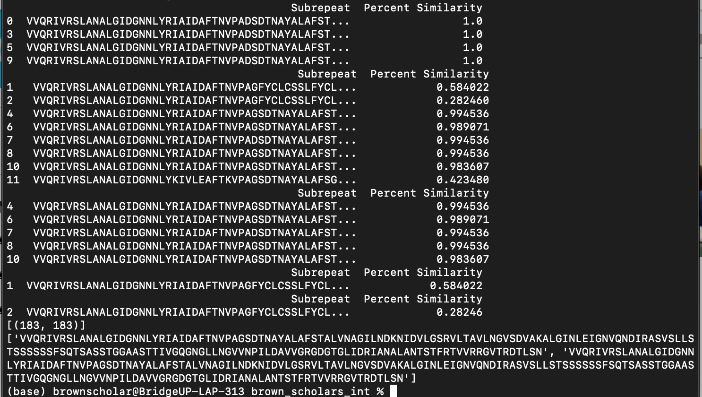

Now that we have finally finished our Gene-ius Project, we have piled up future plans and actions that would build on our current code and knowledge.
Future Plans
The list below are some of the future steps that we have compiled as a group.
- Use the data found with our code to find larger, more macro repeats that a computer would usually gloss over.
- Build upon our code to make it more versatile and effective for the user.
Initially, we were planning on also showing the table of all the percent similarities between the sequences. This table would order the sequences by length and percent similarity. However, in the end, we decided on not implementing the table in our output as we were unable to fix some of our mistakes. For instance, our percent similarities could have been more accurate as we just chose random intervals regarding their order on the table. In the future, implementing a more accurate table in our output would be a really helpful tool for the user if they want a visual representation of the sequences.
The table above illustrates the initial idea we had for our output, which we unfortunatelt had to scratch off. In our next step, we hope to add a table like this with a more accurate percent similarity range.